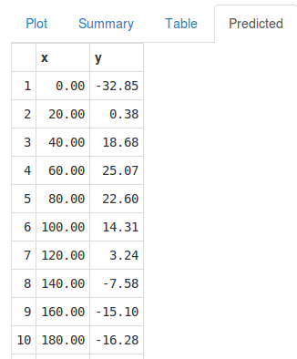
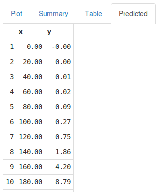
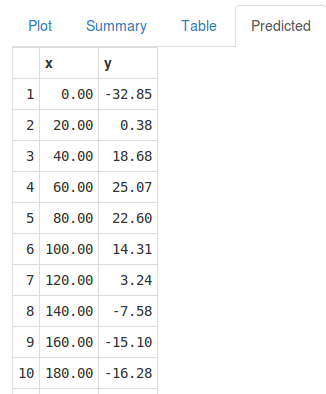
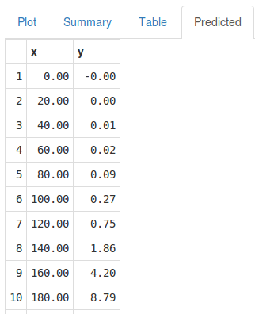

Overview
- It predicts vapor pressure values of mercury from given temperature values.
- The bs function of the spline package has been implemented.
- A range of degrees of freedom from 3 to 10 have been used.
- Adjusted R Squared is estimated, which is a metric for evaluating the goodness of fit of the model.
- The supplied data are from pressure dataset package.
- You can choose scatter and line style plot.
  
 